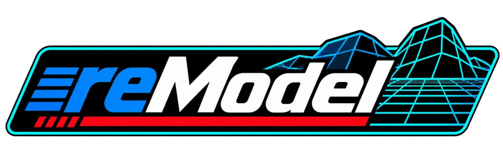
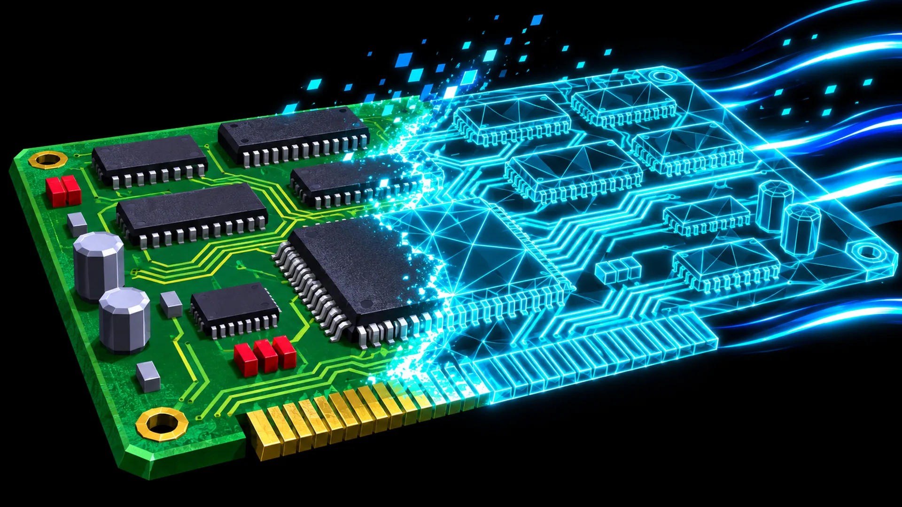

120Hz
Smooth motion
Smooth motion draws in-between frames for displays above 60 Hz by interpolating the game's own geometry. It adds one game frame of latency. Tested on a 120 Hz display.

reModel runs 34 Model 2 arcade games on Linux, Windows and macOS. It's open source, and it ships no games: bring your own ROMs.
Get the source▶ GITHUB · MIT LICENCE
Sega's Model 2 family of arcade boards ran Daytona USA, Sega Rally, Virtua Fighter 2, The House of the Dead and thirty more.
Model 2 boards are thirty years old and failing. reModel runs their games on ordinary PCs, faithfully by default, with optional upgrades.
reModel is an open-source toolkit written in Rust. It runs each game's own program and reimplements the hardware around it.

The native player translates each game's program into machine code as it runs. The release builds work this way.
The geometry processors, the 3D renderer (on your GPU), the sound and music boards, and the I/O and link boards are all reimplemented.
A developer option: the recompiler turns a game's program into Rust ahead of time. It's a build setting and isn't in the downloads.


* Bezels appear in 4:3 windows. HUD placement is set per game, and not every HUD is perfect yet.
Arcade original (the default), Sharp, Smooth modern, CRT, Comic and Custom. Choosing one applies it at once to the paused game, and Compare shows the original and your choice side by side.
The full style menu is in the native player; the browser build has presets. These shots are one frame of Sega Rally.
Smooth motion draws in-between frames for displays above 60 Hz by interpolating the game's own geometry. It adds one game frame of latency. Tested on a 120 Hz display.
Run-ahead runs a second copy of the machine one to three frames ahead, so the picture answers your input sooner. It only helps games with lag to hide, and it's in the native player only.
MSAA 4x, or 8x where the GPU supports it. The native player also has temporal anti-aliasing.


All three are opt-in. Timings in the docs were measured on one development machine.
Linked cabinets work: race up to eight machines over a LAN, or up to four on one split screen.

One machine per player: one hosts and the others join. Daytona USA links 2 to 8 machines; Sega Rally, Manx TT Superbike and Indianapolis 500 link 2 to 4.
Up to four linked machines in one window, with a controller each: Sega Rally, Daytona USA, Manx TT Superbike, Indianapolis 500, Motor Raid and Wave Runner.

Thirty-four sets across four boards: the original Model 2, 2A, 2B and 2C. Each one boots, runs its attract mode, takes a coin and plays. The posters are original art made for reModel.


+ Also runs: Manx TT Superbike twin cabinet (clone set)


+ Also runs: Over Rev (2B version) and Sonic The Fighters (clone sets)


The count includes clone and regional sets. Most games are checked with scripted runs, and not every game has been played to its ending.
Performance figures in the docs come from one development machine.
The source is on GitHub under the MIT licence. Release builds for Linux (AppImage), Windows and macOS are being prepared; until then, build it from source and run make play.
NOTE: reModel ships no games and no ROMs. You need dumps of games you own.